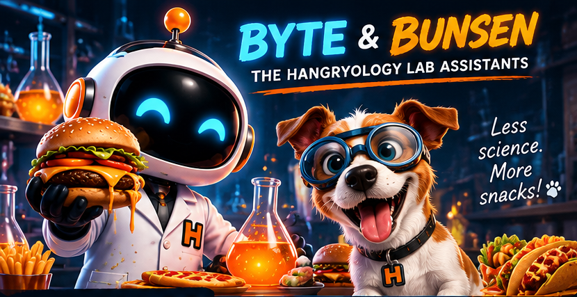
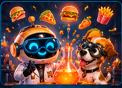

NOT SURE
WHAT TO EAT?
Answer a few questions, spin the wheel, or let us decide. We've got you.

HOW HANGRY ARE YOU?
PECKISH😐GETTING
SNACKY😣HANGRY &
DANGEROUS😡FEED ME
NOW!🚨CODE RED
EMERGENCY
HOW IT WORKS
Answer a few questions
(or skip them).
We find the best
matches for you.
Choose a restaurant
(or spin again).
Enjoy. Crisis averted!
FEATURED CUISINES
Real restaurant listings depend on available OpenStreetMap data. Menus and hours may need confirmation.
Let's diagnose your cravings.
First, tell us where to send the food rescue team.
Not every restaurant listing confirms takeout or delivery. We'll flag unverified information.
What DON'T you want?
Tap foods to eliminate them. Red means excluded.
Time for your food diagnosis.
🍟 Do you want fries tonight?
Fries matching is based on a limited list of known chains, not live menus.
What's the vibe?
Player 1: Your food rules
Make your choices, then pass the phone to Player 2.
🚫 What foods are off limits?
🍟 Fries?
🍽️ Dining vibe?
Player 2: Your turn!
These are your own choices. Player 1's answers stay separate.
🚫 What foods are off limits?
🍟 Fries?
🍽️ Dining vibe?
Your food chemistry

Running Food Experiments...
Searching for restaurants nearby
Your dinner contenders
🔒 Lock favorites, ✕ remove contenders, or add choices from the full list.
Tonight's contenders
Eight is the maximum, not the minimum. Remove contenders to spin with just 1, 2, or 3. Shuffle keeps your chosen wheel size. Use Refill to restore eight.
PRESCRIPTION: DINNER!
🤖 BYTE: EXPERIMENT COMPLETE · 🐶 BUNSEN: FINALLY!
Please verify hours, menu, and service options with the restaurant.
All your matches
♡ Your favorite prescriptions
The science of solving hunger.
Hangryology exists for one reason: deciding what to eat shouldn't be the hardest part of your day.
Set your Hangry Meter, rule out what you don't want, answer a few questions, or leave it to the wheel. Find local restaurants and make a decision before hunger wins.
Early version: live restaurant discovery uses public OpenStreetMap data. Opening hours, menu items, delivery availability, and ratings aren't reliably available yet. No account required; favorites are saved on your device.
Experiment interrupted!
Restaurant search is unavailable right now.
Our free restaurant data service sometimes gets busy. You can retry or reduce the search radius.